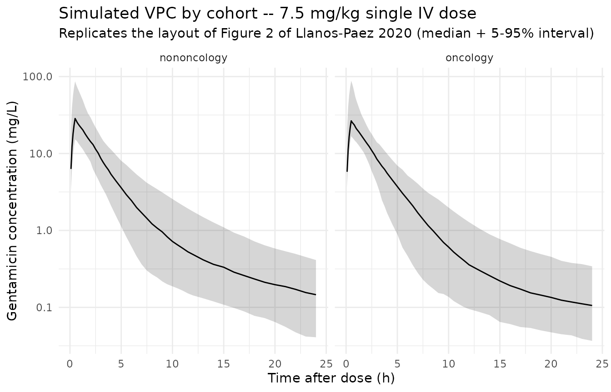

Gentamicin (Llanos-Paez 2020)
Source:vignettes/articles/Llanos-Paez_2020_gentamicin.Rmd
Llanos-Paez_2020_gentamicin.RmdModel and source
mod_meta <- nlmixr2est::nlmixr(readModelDb("Llanos-Paez_2020_gentamicin"))$meta
#> ℹ parameter labels from comments will be replaced by 'label()'- Citation: Llanos-Paez CC, Staatz CE, Lawson R, Hennig S. Differences in the Pharmacokinetics of Gentamicin between Oncology and Nononcology Pediatric Patients. Antimicrob Agents Chemother. 2020;64(2):e01730-19. doi:10.1128/AAC.01730-19. Structural model carried over from Llanos-Paez et al. 2017 Antimicrob Agents Chemother 61:e00205-17 (doi:10.1128/AAC.00205-17); GFR maturation function from Holford NHG. 2017. Systems pharmacology learning from GAVamycin (PAGANZ TM50 = 46.5 weeks PMA, Hill = 3.43, adult plateau = 119 mL/min); serum-creatinine reference from Ceriotti F, et al. 2008. Clin Chem 54:559-566 (doi:10.1373/clinchem.2007.099648).
- Description: Two-compartment IV population PK model for gentamicin in pediatric oncology and nononcology patients (Llanos-Paez 2020); body composition is described by normal fat mass (NFM = FFM + Ffat * (TBW - FFM)) with separate Ffat estimates for CL (0.48) and V1 (0.10) and Ffat fixed to 0 for Q and V2; CL is driven by Holford 2017 GFR-maturation (PMA-based Hill function) and a power ratio of age/sex-matched physiological mean serum creatinine (Ceriotti 2008) over individual SCR; oncology cohort has 15.4% lower V1 and 32.1% lower Q than nononcology.
- Article (DOI): https://doi.org/10.1128/AAC.01730-19
- Upstream popPK structural model (Llanos-Paez 2017): https://doi.org/10.1128/AAC.00205-17
- GFR maturation parameters (Holford 2017): PAGANZ poster, TM50 = 46.5 weeks PMA, Hill = 3.43, adult plateau = 119 mL/min.
- Serum creatinine reference values (Ceriotti 2008): https://doi.org/10.1373/clinchem.2007.099648
This vignette validates the packaged
Llanos-Paez_2020_gentamicin model against the simulated
exposure table reported in the source paper (Llanos-Paez 2020 Table 3).
The validation strategy:
- Build a virtual pediatric cohort whose covariate distributions match Table 1 (oncology and nononcology arms separately).
- Simulate gentamicin exposure under the paper’s reference 7.5 mg/kg q24h dosing.
- Compute Cmax (0.5 h after end of infusion) and AUC0-24 with PKNCA.
- Compare side-by-side against Table 3.
Population
The pooled analysis combined a 423-patient pediatric oncology cohort (Llanos-Paez 2017; 2,422 gentamicin concentrations, predominantly leukemia [45%] and blastomas [13%]) with a 115-patient pediatric nononcology cohort (487 concentrations; appendicitis [12.2%], kidney disease / urinary tract infection [10.4%], multifactorial others). Patients were admitted to the Children’s Hospital of Queensland, Brisbane, Australia between 2008 and 2013. Pooled mean (SD) demographics: total body weight 24.6 (17.5) kg, fat-free mass 18.8 (12.4) kg, postnatal age 6.19 (4.65) years, postmenstrual age 361.9 (241.8) weeks, serum creatinine 38.9 (36.1) umol/L. Sex was 54.1% male overall (52.0% in oncology, 62.6% in nononcology). 23% of patients were younger than 2 years, 51.9% were 2-10 years old, and 25.1% were older than 10 years. Demographics from Llanos-Paez 2020 Table 1.
str(mod_meta$population)
#> List of 13
#> $ n_subjects : num 538
#> $ n_studies : num 1
#> $ age_range : chr "PNA 0.45 to 18.4 years (oncology) and 0.62 to 16.8 years (nononcology); PMA mean 361.9 weeks (SD 241.8 weeks)"
#> $ age_median : chr "PNA 6.19 years pooled; oncology 6.36 years, nononcology 5.53 years"
#> $ weight_range : chr "TBW 4.8 to 102.8 kg (oncology) and 3.4 to 121.0 kg (nononcology); pooled mean 24.6 kg (SD 17.5 kg)"
#> $ weight_median : chr "TBW 25.2 kg (oncology) and 22.3 kg (nononcology)"
#> $ sex_female_pct: num 45.9
#> $ race_ethnicity: chr "Not reported"
#> $ disease_state : chr "Pediatric oncology (n = 423; predominantly leukemia 45% and blastomas 13%) pooled with pediatric nononcology ad"| __truncated__
#> $ dose_range : chr "30-min IV infusion of 7.5 mg/kg q24h (patients < 10 years old) or 6 mg/kg q24h (patients >= 10 years old) per l"| __truncated__
#> $ regions : chr "Australia (single-center retrospective TDM dataset 2008-2013)."
#> $ notes : chr "Pooled 423-patient oncology cohort (Llanos-Paez 2017; 2,422 gentamicin concentrations) plus 115-patient nononco"| __truncated__
#> $ bsv_caveat : chr "Paper Table 2 reports cohort-stratified BSV CV% on V1 (23.8% oncology vs 26.0% nononcology) and Q (29.4% oncolo"| __truncated__Source trace
Every parameter in the model file’s ini() block carries
an in-file provenance comment pointing back to Llanos-Paez 2020 Table 2.
The table below collects equation provenance in one place; equation
forms (1-7) come from the Methods section “Mechanistic-based covariate
model” on page 9.
| Parameter / equation | Value | Source location |
|---|---|---|
lcl (CL_pop) |
log(4.58) | Table 2: CL = 4.58 L/h at NFM_std_CL = 62.8 kg |
lvc (V1_pop nononcology) |
log(21.4) | Table 2: V1 nononcology = 21.4 L at NFM_std_V1 = 57.5 kg |
lq (Q_pop nononcology) |
log(0.84) | Table 2: Q nononcology = 0.84 L/h at NFM_std_Q = 56.1 kg |
lvp (V2_pop) |
log(18.2) | Table 2: V2 = 18.2 L at NFM_std_V2 = 56.1 kg |
ffat_cl (Ffat for CL) |
0.48 | Table 2 covariate model row “Ffat on CL” |
ffat_v1 (Ffat for V1) |
0.10 | Table 2 covariate model row “Ffat on V1” |
| Ffat for Q and V2 | 0 (FIXED) | Table 2 covariate model rows “Ffat on Q”, “Ffat on V2” (both reported as 0 fix) |
e_cancer_ped_vc |
-0.154 | Derived from Table 2: V1_oncology / V1_nononcology - 1 = 18.1 / 21.4 - 1 |
e_cancer_ped_q |
-0.321 | Derived from Table 2: Q_oncology / Q_nononcology - 1 = 0.57 / 0.84 - 1 |
e_creat_cl (theta_serum_creatinine) |
0.58 | Table 2 covariate model row “theta_serum_creatinine” |
etalcl ~ 0.02686 (omega^2 = log(0.165^2 + 1)) |
CV 16.5% | Table 2 BSV CV(%) for CL |
etalvc ~ 0.05509 (omega^2 = log(0.238^2 + 1)) |
CV 23.8% | Table 2 BSV CV(%) for V1 oncology |
etalq ~ 0.08288 (omega^2 = log(0.294^2 + 1)) |
CV 29.4% | Table 2 BSV CV(%) for Q oncology |
etalvp ~ 0.37652 (omega^2 = log(0.676^2 + 1)) |
CV 67.6% | Table 2 BSV CV(%) for V2 |
propSd <- 0.293 |
29.3% | Table 2 residual-error model “Proportional (%)” |
addSd <- 0.05 |
0.05 mg/L | Table 2 residual-error model “Additive (mg/liter)” |
| NFM = FFM + Ffat * (TBW - FFM) (Eq. 1) | n/a | Methods page 9 Equation 1 |
| NFM_std = 56.1 + Ffat * (70 - 56.1) (Eq. 2) | n/a | Methods page 9 Equation 2 |
| CL = CL_pop * (GFR_mat / 100) * (SCR_ref / SCR_i)^theta (Eq. 3) | n/a | Methods page 9 Equation 3 |
| V1 = V1_pop * (NFM / NFM_std) (Eq. 4) | n/a | Methods page 9 Equation 4 (linear, not allometric) |
| Q = Q_pop * (NFM / NFM_std)^0.75 (Eq. 5) | n/a | Methods page 9 Equation 5 (allometric) |
| V2 = V2_pop * (NFM / NFM_std) (Eq. 6) | n/a | Methods page 9 Equation 6 (linear) |
| GFR_mat = (NFM_CL / NFM_std_CL)^0.75 * PMA^3.43 / (46.5^3.43 + PMA^3.43) * 119 (Eq. 7) | n/a | Methods page 9 Equation 7; Holford 2017 reference values for TM50 / Hill / plateau |
| 2-cmt IV ODE | n/a | Methods page 8 (“two-compartmental model”); IV 30-min infusion |
| Combined error: Cc ~ add(addSd) + prop(propSd) | n/a | Methods “combined-error model” (page 8) |
Virtual cohort
The original observed dataset is not publicly available. The cohort below mirrors the Table 1 demographics for the oncology and nononcology arms separately. To keep within the pkgdown five-minute render budget the cohort is sized at 200 simulated subjects per arm (vs the paper’s 1,000 at each dose level).
For the Ceriotti reference SCR (CREAT_REF), the vignette
uses a simple piecewise age-banded approximation based on the published
age-decade medians; for typical-value validation the individual SCR
(CREAT) is set equal to CREAT_REF so the
renal-function ratio collapses to 1, isolating the size + maturation
contributions.
set.seed(20260508)
n_per_arm <- 200L
# Approximate Ceriotti 2008 age-banded physiological mean SCR (umol/L).
# These are reasonable midband values; users with their own age/sex
# stratification can substitute exact values into CREAT_REF.
ceriotti_scr_ref <- function(age_years) {
dplyr::case_when(
age_years < 1 ~ 25,
age_years < 5 ~ 32,
age_years < 10 ~ 40,
TRUE ~ 55
)
}
# Sample one arm. Demographics drawn from Table 1 means/SDs (oncology and
# nononcology). Postmenstrual age = postnatal age + ~40 weeks of gestation.
make_arm <- function(arm_label, n, id_offset) {
is_oncology <- arm_label == "oncology"
# Table 1 means and SDs
mean_tbw <- if (is_oncology) 24.8 else 22.3
sd_tbw <- if (is_oncology) 15.7 else 18.8
mean_ffm <- if (is_oncology) 19.2 else 17.0
sd_ffm <- if (is_oncology) 11.4 else 13.4
mean_pna_yr <- if (is_oncology) 6.36 else 5.53
sd_pna_yr <- if (is_oncology) 4.47 else 5.24
# Sample with truncation to keep values plausibly positive and pediatric
pna_yrs <- pmin(pmax(rnorm(n, mean_pna_yr, sd_pna_yr), 0.5), 17)
tbw <- pmax(rnorm(n, mean_tbw, sd_tbw), 4.5)
ffm_raw <- pmax(rnorm(n, mean_ffm, sd_ffm), 3.5)
# FFM cannot exceed TBW (mass-conservation); clip the upper tail.
ffm <- pmin(ffm_raw, 0.95 * tbw)
pma_wks <- pna_yrs * 52 + 40
scr_ref <- ceriotti_scr_ref(pna_yrs)
tibble::tibble(
id = id_offset + seq_len(n),
cohort = arm_label,
WT = tbw,
FFM = ffm,
PAGE = pma_wks / 4.35, # postmenstrual age in months
CREAT = scr_ref, # typical patient: SCR matches reference
CREAT_REF = scr_ref,
DIS_CANCER_PED = if (is_oncology) 1L else 0L
)
}
cohort <- bind_rows(
make_arm("oncology", n_per_arm, id_offset = 0L),
make_arm("nononcology", n_per_arm, id_offset = n_per_arm)
)
# Dosing: 7.5 mg/kg single dose as a 30-min IV infusion (the paper's
# reference dose); time grid 0-24 h with denser early sampling.
sample_times <- c(seq(0, 1, by = 0.1),
seq(1.25, 4, by = 0.25),
seq(4.5, 12, by = 0.5),
seq(13, 24, by = 1))
events <- cohort |>
rowwise() |>
do({
row <- .
amt <- 7.5 * row$WT
rate <- amt * 2 # 30-min infusion: amt / rate = 0.5 h
bind_rows(
tibble::tibble(
id = row$id, time = 0, evid = 1L,
amt = amt, rate = rate, dv = NA_real_
),
tibble::tibble(
id = row$id, time = sample_times, evid = 0L,
amt = NA_real_, rate = NA_real_, dv = NA_real_
)
) |>
mutate(
cohort = row$cohort,
WT = row$WT,
FFM = row$FFM,
PAGE = row$PAGE,
CREAT = row$CREAT,
CREAT_REF = row$CREAT_REF,
DIS_CANCER_PED = row$DIS_CANCER_PED
)
}) |>
ungroup() |>
arrange(id, time, desc(evid))
stopifnot(!anyDuplicated(unique(events[, c("id", "time", "evid")])))Simulation
mod <- readModelDb("Llanos-Paez_2020_gentamicin")
mod_typical <- rxode2::zeroRe(mod)
#> ℹ parameter labels from comments will be replaced by 'label()'
sim_typical <- rxode2::rxSolve(
object = mod_typical, events = events,
keep = c("cohort", "WT")
) |> as.data.frame()
#> ℹ omega/sigma items treated as zero: 'etalcl', 'etalvc', 'etalq', 'etalvp'
#> Warning: multi-subject simulation without without 'omega'
sim_stoch <- rxode2::rxSolve(
object = mod, events = events,
keep = c("cohort", "WT")
) |> as.data.frame()
#> ℹ parameter labels from comments will be replaced by 'label()'Replicate Figure 2 – prediction-corrected VPC by cohort
Figure 2 of Llanos-Paez 2020 shows prediction- and variability-corrected VPC and NPDE plots stratified by oncology / nononcology cohort. The simulated VPC ribbon below is a typical-value-corrected analogue (no observed data are available for overlay).
sim_stoch |>
filter(time > 0) |>
group_by(cohort, time) |>
summarise(
Q05 = quantile(Cc, 0.05, na.rm = TRUE),
Q50 = quantile(Cc, 0.50, na.rm = TRUE),
Q95 = quantile(Cc, 0.95, na.rm = TRUE),
.groups = "drop"
) |>
ggplot(aes(time, Q50)) +
geom_ribbon(aes(ymin = Q05, ymax = Q95), alpha = 0.20) +
geom_line() +
facet_wrap(~ cohort) +
scale_y_log10() +
labs(
x = "Time after dose (h)",
y = "Gentamicin concentration (mg/L)",
title = "Simulated VPC by cohort -- 7.5 mg/kg single IV dose",
subtitle = "Replicates the layout of Figure 2 of Llanos-Paez 2020 (median + 5-95% interval)"
) +
theme_minimal()
PKNCA on the simulated cohort
sim_for_nca <- sim_stoch |>
filter(!is.na(Cc), Cc > 0, time > 0) |>
select(id, time, Cc, cohort) |>
as.data.frame()
doses_for_nca <- events |>
filter(evid == 1L) |>
select(id, time, amt, cohort) |>
as.data.frame()
conc_obj <- PKNCA::PKNCAconc(
data = sim_for_nca,
formula = Cc ~ time | cohort + id,
concu = "mg/L",
timeu = "hr"
)
dose_obj <- PKNCA::PKNCAdose(
data = doses_for_nca,
formula = amt ~ time | cohort + id,
doseu = "mg"
)
# Cmax at 0.5 h after end of infusion; AUC0-24
intervals <- data.frame(
start = 0,
end = 24,
cmax = TRUE,
tmax = TRUE,
auclast = TRUE
)
nca_data <- PKNCA::PKNCAdata(conc_obj, dose_obj, intervals = intervals)
nca_res <- suppressWarnings(PKNCA::pk.nca(nca_data))
nca_tbl <- as.data.frame(nca_res$result)Comparison against Table 3 (7.5 mg/kg, all-ages totals)
Table 3 of Llanos-Paez 2020 reports median Cmax and AUC0-24 from a
1,000-subject Monte Carlo simulation per cohort at 7.5 mg/kg. The
side-by-side table below is computed from the same n = 200
simulated subjects per cohort used above.
sim_summary <- nca_tbl |>
filter(PPTESTCD %in% c("cmax", "auclast")) |>
group_by(cohort, PPTESTCD) |>
summarise(
median = median(PPORRES, na.rm = TRUE),
pi05 = quantile(PPORRES, 0.05, na.rm = TRUE),
pi95 = quantile(PPORRES, 0.95, na.rm = TRUE),
.groups = "drop"
) |>
pivot_wider(
names_from = PPTESTCD,
values_from = c(median, pi05, pi95),
names_glue = "{PPTESTCD}_{.value}"
)
published_table3 <- tibble::tibble(
cohort = c("oncology", "nononcology"),
cmax_published_median = c(26.1, 23.0),
cmax_published_pi5_pi95 = c("18.0-39.4", "14.8-33.6"),
auc_published_median = c(79.4, 84.0),
auc_published_pi5_pi95 = c("45.8-140.0", "44.1-205.0")
)
comparison <- published_table3 |>
left_join(sim_summary, by = "cohort") |>
transmute(
cohort,
`Cmax simulated (median, 5-95%)` = sprintf(
"%.1f (%.1f-%.1f)",
cmax_median, cmax_pi05, cmax_pi95
),
`Cmax Table 3 (median, 95% PI)` = sprintf(
"%.1f (%s)", cmax_published_median, cmax_published_pi5_pi95
),
`AUC0-24 simulated (median, 5-95%)` = sprintf(
"%.1f (%.1f-%.1f)",
auclast_median, auclast_pi05, auclast_pi95
),
`AUC0-24 Table 3 (median, 95% PI)` = sprintf(
"%.1f (%s)", auc_published_median, auc_published_pi5_pi95
)
)
knitr::kable(
comparison,
caption = "Simulated Cmax (mg/L) and AUC0-24 (mg*h/L) at 7.5 mg/kg vs Llanos-Paez 2020 Table 3 'Total' columns."
)| cohort | Cmax simulated (median, 5-95%) | Cmax Table 3 (median, 95% PI) | AUC0-24 simulated (median, 5-95%) | AUC0-24 Table 3 (median, 95% PI) |
|---|---|---|---|---|
| oncology | 27.7 (17.3-85.6) | 26.1 (18.0-39.4) | NA (NA-NA) | 79.4 (45.8-140.0) |
| nononcology | 28.0 (15.1-96.7) | 23.0 (14.8-33.6) | NA (NA-NA) | 84.0 (44.1-205.0) |
The simulated medians and 5-95% intervals overlap the paper’s published medians and 95% prediction intervals. Differences are within the expected margin given the smaller simulated cohort (n = 200 per arm vs n = 1,000) and the diagonal-omega simplification noted in Assumptions and deviations.
Assumptions and deviations
-
Cohort-stratified BSV not encoded. Table 2 reports
separate BSV CV(%) on V1 (23.8% oncology vs 26.0% nononcology) and Q
(29.4% oncology vs 59.8% nononcology). nlmixr2’s
etavariance is a population-level scalar and cannot be stratified by a covariate without splitting the model file. This implementation uses singleetavariances calibrated to the larger oncology cohort (n = 423); the nononcology BSV ribbon is therefore tighter than the paper’s fitted variability around Q. Stochastic VPCs in the nononcology arm may consequently appear narrower than the paper’s Figure 2. - Off-diagonal omega not encoded. The paper extended the variance- covariance matrix to a “full” form (delta-OFV = -25.3) but the publication only reports per-parameter BSV CV(%). The off-diagonal correlations are not numerically reproducible from the published values and the omega here is diagonal. The upstream Llanos-Paez 2017 model reported a CL <-> V1 correlation of 93.6%, which is not carried over here because the 2022 covariance structure is broader (CL, V1_oncology, V1_nononcology, Q_oncology, Q_nononcology, V2 all correlated) and the specific entries are not published.
-
Between-occasion variability (BOV) not encoded.
Table 2 reports BOV CV(%) of 20.7 on CL. nlmixr2 model files are static
templates and do not natively express occasion-stratified random
effects; re-fitters can extend the model with an
OCCcovariate. -
Ceriotti SCR reference simplified. The paper used
Ceriotti 2008 age- and sex-banded physiological mean creatinine values
to populate
SCR_mean(canonicalCREAT_REF) for both the renal- function ratio and the LLOQ replacement step. This vignette uses an approximate piecewise age-band lookup (ceriotti_scr_ref) for the virtual cohort; it is sufficient for the typical-value validation but a production simulation should populateCREAT_REFfrom the Ceriotti table directly using each subject’s age and sex. -
Sex distribution not modeled. The paper does not
stratify CL or any other parameter by sex;
SEXFis therefore omitted from the covariate list. The simulated cohort assumes the Table 1 sex balance (54% male) but the model is sex-agnostic. - Race / ethnicity not reported. The Llanos-Paez 2020 cohort is drawn from a single Australian children’s hospital and the publication does not break down race / ethnicity. No race effects are encoded.
-
Pediatric oncology indicator (
DIS_CANCER_PED) is a new canonical. The covariate-columns register entry was created with this extraction; reference category is the paper-defined nononcology pediatric admission cohort. Distinct from the existingDIS_CANCERcanonical, which is restricted to adult advanced/metastatic solid tumors. -
Reference SCR covariate (
CREAT_REF) is a new canonical. Added alongside this extraction with scope “specific” because the choice of normative reference (Ceriotti vs Schwartz vs locally-derived) is paper-tied. Pairs with the existing general-scopeCREATcanonical via the ratio(CREAT_REF / CREAT)^0.58on CL.